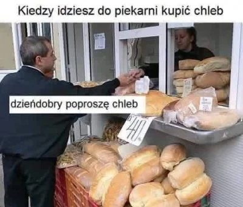

klik
Wszyscy lubimy chlebek i o tym jest ta strona. Może wypada się przedstawić...
Jesteśmy trzema kumpelkami o jednym wspólnym mianowniku: kochamy chleb, pieczemy chleb, na imprezie zamiast pić piwo pijemy kwas chlebowy.
Bohen K. to najśmieszniejsza babka na świecie - to od niej pochodzi galeria, którą możesz przejrzeć poniżej. :)
Mar Tzina jest naszą utalentowaną artystyczną duszą i poetką - wszystkie flarfy jej autorstwa!
Lorem I., czyli nasz nerd - to ona napisała stronkę żebyś mógł się nią teraz nacieszyć!!!
Co jeszcze znajdziesz na naszej stronce? Sekcję chleb powszedni, czyli różne i różniaste wpisy od nas trzech. :) Kartki walentynkowe
do wysłania swojej drugiej połówce chlebka, naszą ulubioną muzę, przepisy na chlebek i bułeczki itp. itd. :)
Życzymy miłego czytania!!!
-Bohen K., Mar Tzina i Lorem I.
memy o chlebie gorące jak świeże bułeczki ;)

klik!
wyznanie miłości dla twojej ukochanej bułeczki
klik
najlepsza muza o chlebie + lyrics
przepis na kajzerkę
przepis na chlebek
przepis na bagietkę czosnkową
klik!